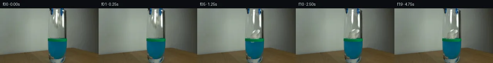
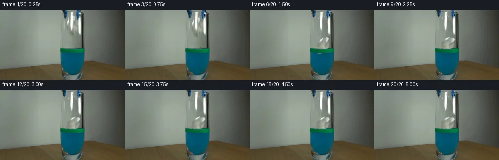
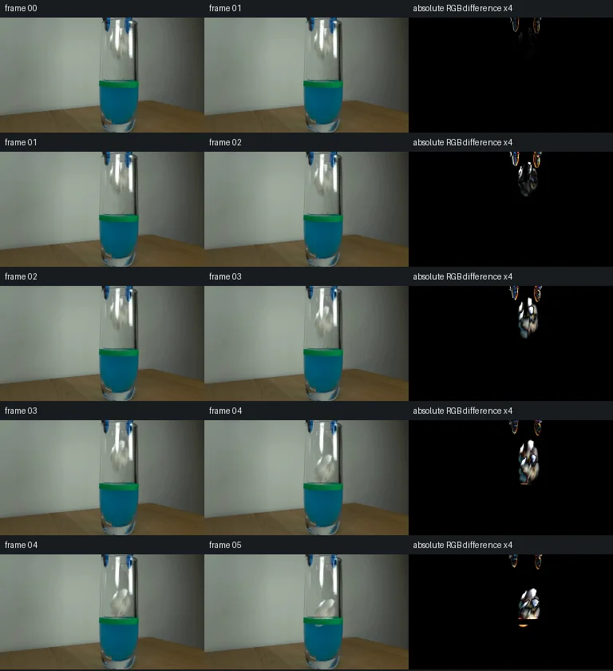

V0 · 初版 · 最终提交
![]()
Observable Generation Trace
把最终像素视频、Harness 冻结的每轮候选、真实工具事件和 Agent 自述放在同一页。可观测证据与模型自述分开标记，避免把“模型说它检查过”误当成真实工具调用。
![首帧]()
Static locked-off single-shot with fixed frame throughout filmed with constant framerate in real-time. The scene shows a realistic scientific demonstration. The scene only contains the described setup and actions. The blue-black grabber tool was holding the small crumpled piece of paper at the inner rim of the glass containing the blue liquid and the green water level marking. The blue-black grabber releases the small crumpled piece of paper into the glass containing blue liquid with a green band marking the water level.
首帧显示在左侧播放器初始画面。Track 权限、隔离和 tensor 一致性来自 run manifest，而不是 METHOD.md。
默认勾选初版和最终版；可选其他版本一起同步播放。仅检查图更新的连续重复快照已合并，回退旧视频仍保留为一次修订。
Observable events
来源：events.jsonl + run manifest
此 Track 禁止读取输出图片。逐轮预览由外部 Harness 自动冻结，只用于事后审计，生成 Agent 当时看不到这些页面。
Frozen candidates
每张图来自该 round 的真实 00 / 01 / 05 / 10 / 19 帧

pixels 750610356effdac7 · code 7e17213ad6ec4c39
--- previous/generate.py
+++ current/generate.py
@@ -0,0 +1,264 @@
+"""PixelWorld-Text continuation using local source pixel compositing only.
+
+No image viewing, external references, models, render engines, or network.
+Run: python generate.py
+"""
+from pathlib import Path
+import json
+import numpy as np
+from PIL import Image, ImageDraw
+from scipy.ndimage import gaussian_filter, map_coordinates
+from artifact_io import save
+
+ROOT = Path(__file__).resolve().parent
+W, H, N = 256, 144, 20
+SRC = np.asarray(Image.open(ROOT / 'first_frame.png').convert('RGB'), dtype=np.float64)
+Y, X = np.mgrid[:H, :W].astype(float)
+
+
+def polygon(points, feather=0.45):
+ # Supersampling gives subpixel silhouettes, followed by a tiny optical blur.
+ s = 4
+ im = Image.new('L', (W*s, H*s))
+ ImageDraw.Draw(im).polygon([(round(x*s), round(y*s)) for x,y in points], fill=255)
+ a = np.asarray(im.resize((W,H), Image.Resampling.LANCZOS), dtype=float)/255
+ return np.clip(gaussian_filter(a, feather), 0, 1)
+
+
+# Clear glass interior: a local RGB profile sampled immediately below the held
+# paper. The y gradient comes from unobstructed pixels beside the paper.
+profile = gaussian_filter(SRC[56:69].mean(axis=0), (0.8,0))
+clear = np.broadcast_to(profile[None,:,:], SRC.shape).copy()
+y_ref = SRC[56:69,135].mean(axis=0)
+y_shift = gaussian_filter(SRC[:,135,:], (2.0,0)) - y_ref
+# At the very top that sample contains a jaw; use another local wall sample.
+y_shift[:21] = (gaussian_filter(SRC[:21,124,:], (1.0,0))
+ - SRC[56:69,124,:].mean(axis=0))
+y_shift = np.clip(y_shift, -13, 13)
+clear += y_shift[:,None,:]
+
+# A pinched upper fold, irregular side folds, and lower creases. These boundaries
+# are estimates from numeric residuals; this is not a supplied segmentation.
+paper_alpha = polygon([(148,12.5),(152,12.5),(154,19.5),(158,21),
+ (160.5,27.5),(161,35),(160.5,39.5),(158.5,43.5),
+ (155,47),(152.5,51.5),(149,53.5),(145.5,53),
+ (141.5,49),(141,44),(138,41),(136.8,36),
+ (137.2,28),(137.5,23),(139.5,18),(143,18),
+ (145,15)], 0.48)
+
+# Recover the paper texture behind the clipped vertical specular reflection.
+# Its neighboring folds provide the missing values. All other fold texture
+# comes directly from the source crop.
+paper_tex = SRC.copy()
+for x in range(144,149):
+ u = (x-143)/6
+ paper_tex[:,x] = SRC[:,143]*(1-u) + SRC[:,149]*u
+paper_tex = gaussian_filter(paper_tex, (0.25,0.25,0))
+
+# Glass highlights are an optical foreground layer. Compute transmission from
+# brightness excess only in the two observed highlight columns. Keep all other
+# pixels transmissive. Exact source glass streaks remain in the base layer.
+glare = np.zeros((H,W))
+for xa,xb in [(143,149),(160,166)]:
+ excess = (SRC[:,xa:xb+1,0] - clear[:,xa:xb+1,0])
+ g = np.clip(excess / np.maximum(255-clear[:,xa:xb+1,0],1),0,1)
+ glare[:,xa:xb+1] = g
+# Restrict the reflection mask to its measured original height.
+glare *= ((Y >= 3) & (Y <= 52))
+transmit = 1 - glare
+
+# This residual formulation reproduces the source paper at its original pose
+# exactly while leaving the original glare in the vacated background.
+base = SRC - paper_alpha[:,:,None]*(paper_tex-clear)*transmit[:,:,None]
+
+# Matte the two jaws using blue chroma / dark contrast, constrained to their
+# measured polygons. The stationary right contour is outside these masks.
+left_shape = polygon([(126.6,0),(139,0),(140,3),(138.5,6),
+ (138,13),(136,17.5),(134.5,19),(132,17),
+ (130.4,9),(130,6),(126.5,6)],0.35)
+right_shape = polygon([(155,0),(166,0),(165.5,3.5),(164,7),
+ (164,13),(162.2,18.5),(160.5,21),
+ (157,20),(155.4,16),(154.5,10)],0.35)
+chroma = np.clip((SRC[:,:,2]-SRC[:,:,0]-12)/18,0,1)
+dark = np.clip((clear[:,:,0]-SRC[:,:,0]-15)/45,0,1)
+left_alpha = left_shape*np.maximum(chroma,dark)
+right_alpha = right_shape*np.maximum(chroma,dark)
+
+# Local restoration behind jaws. Each horizontal row uses intact pixels to
… diff truncated; 177 more lines …pixels 750610356effdac7 · code 332e0c0c9e916959
--- previous/generate.py
+++ current/generate.py
@@ -245,7 +245,7 @@
assert np.array_equal(png,frames[f]),f
# Verify no camera/environment drift outside the measured action rectangle.
static=np.ones((H,W),dtype=bool)
-static[:104,124:168]=False
+static[:104,124:174]=False
assert np.all(frames[:,static]==frames[0,static]),'Unexpected outside motion'
# The level band remains pixel-identical wherever the tool never crossed it.
assert np.all(frames[:,81:88,124:174]==frames[0,81:88,124:174])pixels 750610356effdac7 · code 9fec67a7c6befa7e
--- previous/generate.py
+++ current/generate.py
@@ -5,6 +5,8 @@
"""
from pathlib import Path
import json
+import re
+import base64
import numpy as np
from PIL import Image, ImageDraw
from scipy.ndimage import gaussian_filter, map_coordinates
@@ -249,10 +251,30 @@
assert np.all(frames[:,static]==frames[0,static]),'Unexpected outside motion'
# The level band remains pixel-identical wherever the tool never crossed it.
assert np.all(frames[:,81:88,124:174]==frames[0,81:88,124:174])
+# Independently decode the standalone player's base frame and delta packets.
+html=(ROOT/'index.html').read_text()
+player_data=json.loads(re.search(r'const DATA=(.*?);\nfunction unpack',html,re.S).group(1))
+def unpack_packet(s):
+ return np.frombuffer(base64.b64decode(s),dtype='<u4')
+player_pixels=unpack_packet(player_data['first']).copy()
+player_frames=[player_pixels.copy()]
+for encoded in player_data['deltas']:
+ patch=unpack_packet(encoded)
+ i=0
+ while i<len(patch):
+ start,count=map(int,patch[i:i+2])
+ i+=2
+ player_pixels[start:start+count]=patch[i:i+count]
+ i+=count
+ assert i==len(patch)
+ player_frames.append(player_pixels.copy())
+assert len(player_frames)==N
+assert np.array_equal(np.stack(player_frames).reshape(N,H,W),pixels.transpose(2,0,1))
report={'tensor_shape':list(pixels.shape),'tensor_dtype':str(pixels.dtype),
'packing':'0xRRGGBB','frames':20,'fps':4,'duration_seconds':5,
'frame00_exact':True,'all_pngs_match_tensor':True,
'fixed_environment_check':True,'fixed_green_band_check':True,
+ 'standalone_player_pixels_match_tensor':True,
'review_method':'numeric RGB inspection only; no image viewing tool',
'mean_absolute_rgb_change_by_transition':[
round(float(np.abs(frames[f].astype(float)-frames[f-1].astype(float)).mean()),5)Final visual checks
Harness 保存的最终产物


Agent claims
以下文字由生成 Agent 撰写，不等同于工具证据
Inspection method: local Python with PIL/NumPy, numeric RGB values, thresholded coordinate runs, and pixel statistics. No image Read/View tools were used. Coordinates use the top-left origin.
The supplied RGB image measures 256 × 144. A stationary clear drinking glass occupies approximately x=122–175 and y=3–139 on a brown tabletop (predominantly RGB 85,72,46). The background is a softly varying grey-green field, brighter to the left and darker to the right. The glass right contour is a dark vertical feature at x=167–173. The blue liquid occupies approximately x=125–173, y=88–127 (typical RGB 0,85,110). The green level band is at y=80–87, spanning about x=124–173. Its upper curved edge runs near y=77–80. The band is fixed to the glass; it is not an animated stripe.
Two blue-black grabber arms enter from above: approximately x=128–139 and x=155–164, ending around y=18–20. The paper is interpreted as the folded, irregular pale/grey region within x=137–160, y=13–53, hanging between the jaws. Strong clipped white streaks around x=145–148 and x=161–165 are treated as glass highlights and retained in the original positions. The paper silhouette and hidden texture need estimation because the transparent glass and highlights overlap it. Reconstruction will use only nearby source pixels and local numeric operations.
The camera, glass, green marking, tabletop, lighting, and background stay fixed. The jaws spread slightly, release the paper, and lift a short distance. The paper falls through the air space inside the glass, turns modestly, makes a small surface disturbance, and remains partly immersed at the liquid surface. No large splash, new objects, camera motion, text, or cuts will be added. Light crumpled paper is assumed buoyant over this five-second interval, with mild wetting and diminishing bobbing.
| Frame | Time (s) | Event |
|---|---|---|
| 00 | 0.00 | Exact supplied first frame; paper held at rim. |
| 01 | 0.25 | Jaws begin separating; paper almost stationary. |
| 02 | 0.50 | Release; small downward shift, slight rotation. |
| 03 | 0.75 | Paper falls about 12 px from its initial center; slight turn. |
| 04 | 1.00 | Paper falls about 29 px; lowest folds contact the surface. |
| 05 | 1.25 | Brief shallow immersion at about 39 px displacement; small ripples. |
| 06 | 1.50 | Paper rebounds gently; lower folds are blue-tinted. |
| 07 | 1.75 | Paper rolls toward a stable floating orientation. |
| 08 | 2.00 | First diminishing bob; ripples widen. |
| 09 | 2.25 | Small return bob and continued settling. |
| 10 | 2.50 | First diminishing bob; ripples widen. |
| 11 | 2.75 | Paper drifts less than a pixel toward glass center. |
| 12 | 3.00 | Small vertical oscillation. |
| 13 | 3.25 | Ripple contrast decreases. |
| 14 | 3.50 | Wetted lower paper stays partly submerged. |
| 15 | 3.75 | Small remaining bob and roll. |
| 16 | 4.00 | Near-settled flotation. |
| 17 | 4.25 | Surface disturbance almost gone. |
| 18 | 4.50 | Stable paper at surface; minute residual motion. |
| 19 | 4.75 | Final settled state, with glass and level band stationary. |
Planned generation: source-preserving compositing, locally reconstructed pixels in vacated paper/jaw regions, an extracted and locally filled paper texture warped along an analytic falling/bobbing path, fixed glass-highlight occlusion, blue attenuation below the liquid surface, and faint analytic surface ripples. All twenty frames will be saved as PNG and a packed uint32 0xRRGGBB tensor and verified for equality. Inspection sheets are output artifacts, not a claim of visual review.
This continuation was produced with deterministic local Python pixel operations on first_frame.png, using the action described in prompt.txt. The frame was inspected through numeric RGB samples, thresholded coordinate intervals, and array statistics. No image Read/View tool, visual review, network, other case, external reference, external model, engine, or subagent was used.
OBSERVATION.md was written before generation code. Numeric contrast estimates identify the original blue-black jaws, hanging paper, glass, blue liquid, and green level band. The irregular paper boundary and its obscured folds are approximate reconstructions. Strong vertical bright features were interpreted as stationary glass reflections. This interpretation and the choice that the lightweight paper remains buoyant are modeling assumptions.
generate.py uses PIL, NumPy, and SciPy. Most of each output is copied exactly from the input photograph. A local profile of unobstructed glass pixels restores the region vacated by the paper. Paper color and crease texture are sampled from the original region; interpolation between neighboring folds supplies texture hidden beneath a bright glass reflection. A residual compositing layer keeps that reflection in its original position. Jaw masks are calculated locally from numeric blue chroma and darkness, bounded by manually estimated polygons. Nearby source pixels supply the small areas revealed by the opening jaws.
The jaws spread by approximately 2.3 pixels per side and lift by 3.5 pixels. The paper follows an accelerated sampled fall with modest rotation, contacts the liquid around frame 04, dips shallowly in frame 05, and then follows a damped bob and roll until frame 19. Bilinear inverse mapping moves the original fold texture and supersampled silhouette. A small change of projected scale represents its turning. This is an analytic image-space motion model, not a measured fluid simulation. Blue attenuation is applied to the lowest wetted folds. The original green band occludes the paper and remains pixel-identical throughout. Faint mathematical elliptical ripples decay on the small visible surface without shifting the band.
The twenty frames are RGB uint8 images at 256 × 144. At 4 fps, each frame is held for 0.25 seconds, yielding a five-second sequence. Frame 00 is the exact supplied RGB image. pixels.npz contains the pixels array of shape (144, 256, 20) and dtype uint32, with each entry packed as 0xRRGGBB. artifact_io.py writes the PNG files, packed tensor, inspection contact sheet, and standalone HTML player. generate.py additionally writes transition_check.png with early frame pairs and amplified RGB differences.
Validation passed for the exact first frame, all twenty decoded PNGs against the packed tensor, the fixed scene outside the local action region, and the fixed green band. Independent decoding of the HTML player's first frame and all nineteen delta packets exactly reproduces the same tensor. verification.json records those checks, per-transition numeric change statistics, and the sampled motion coordinates. The inspection and transition images were created for human review; they were not visually inspected by the agent.
Run python generate.py from this workspace to regenerate all pixel artifacts and the verification report. The scene inputs are only the first frame and prompt; the supplied output helpers are used for artifact serialization.